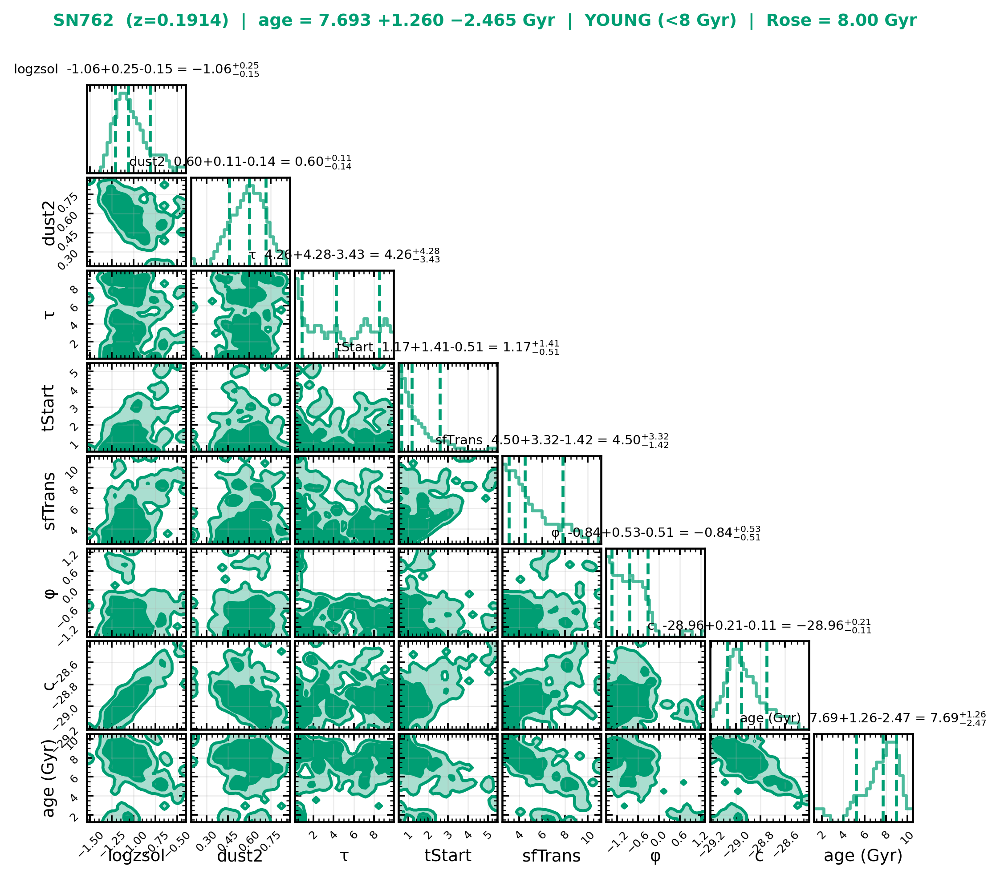

Host-Galaxy Stellar Ages & the
Hubble-Residual Age Step in Type Ia Supernovae
Reproducing Rose (2019), and testing Son (2025) on independent CSP data
Deba Priyo Guha (Priyojeet)
Center for Astronomy, Space Science & Astrophysics (CASSA) · Independent University, Bangladesh
Supervisor: Syed Ashraf Uddin (Shuvo Sir) · ← → to navigate · F = fullscreen
What we are actually doing
the TOOL
we borrow his global-age method
the TARGET
the claim we refute
the WITNESS
corroborates "dark energy is safe"
The Stakes
Why a galaxy's age can threaten dark energy.
Type Ia Supernovae → Dark Energy
- Exploding white dwarf near a fixed mass → a standardizable candle (~0.12 mag).
- 1998: SN Ia revealed the accelerating Universe → dark energy (Nobel 2011).
- They anchor w, Ωm, H₀ — any hidden systematic hits cosmology directly.
HR = μobs − μmodel(z ; ΛCDM)
The Hubble residual (HR) is the leftover after standardization. If HR tracks a host-galaxy property, our distances are biased.
The Age Step
- Known: the mass step — SN Ia in massive hosts are slightly brighter (~0.06 mag).
- Question: is there also an age step, and does the mass step already absorb it?
- High-z hosts are younger on average → an uncorrected age–HR trend mimics cosmic acceleration.
Son's Challenge
"The age bias is so strong it kills dark energy."
Son et al. (2025)
- Applied to DESI BAO → a non-accelerating, decelerating Universe.
- > 9σ tension with ΛCDM → "no dark energy needed."
- Sah (2026) pushes even further: Pantheon+ decelerates after an age correction.
If true, this would overturn a Nobel-winning result. So it must be tested carefully.
But Son Never Tested It Independently
- Son brought no new data. He re-measured ages on the SAME samples as Rose (R19) and Gupta (G11).
- "Ubiquitous" was never checked on an independent survey.
- So the question is wide open: does the strong bias appear in data Son never touched?
Three Camps — and Where We Sit
| Paper | Age bias? | Dark energy? | For / against us |
|---|---|---|---|
| Rose 2019 | Real but modest (~0.11 mag) | Survives | ✅ our method base |
| Son 2025 (+Sah, Lee, Chung) | Strong, ubiquitous, 5.5σ | Gone (decelerating) | ❌ target |
| Wiseman 2026 | Negligible | Survives | ✅ against Son (half-ally) |
Our line: age is real (with Rose) + dark energy is safe (with Wiseman) → reject Son's over-reach. Wiseman is a half-ally: with us on dark energy, but against Rose's "age is real."
Our Tool — Rose's Global-Age Method
We don't invent a method; we reproduce Rose's exactly.
Bayesian SED Fitting with FSPS (mc-age)
- FSPS = the physics: given age, dust, metallicity, SFH → predicted galaxy brightness.
- Sampler = the blind hunter: searches for parameters that match the data.
- Exactly Rose: SFH
sfh=5(delayed-τ + tail),zcontinuous=2, 7 params. - Global host photometry (
campbellG) — Shuvo Sir: global age is the correct metric.

Flagship: SN762

| Method | Age (Gyr) |
|---|---|
| Rose 2019 (published) | 8.0 |
| emcee (reproduction) | 7.8 |
| Nautilus | 7.8 |
| BAGPIPES | 6.6 |
Is the Method Robust?
Six samplers, one posterior — and why Nautilus wins. (Paper 1)
Six Samplers, One Posterior
SED-fit ages can depend on the sampler. We run the same model with six and demand the same age.
Rose original
modern rebuild
neural nested · workhorse
ellipsoidal nested
dynamic nested
different model · cross-check
Two independent codes per dataset (pristine Rose + Nautilus). Same answer ⇒ real, not a sampler artefact.
Why Nautilus Wins

- SN762 controlled test: 0.32 h wall, 10.2 core-h — ~60× cheaper than emcee.
- Throughput race on one node: converges the most hosts per unit time.
- Root cause: emcee needs 2.2M FSPS evals/host; nested/neural ~1.7×10⁵.
- vs Rose (98 hosts): +0.64 ± 0.29 Gyr. Gupta (2011) cross-check: −0.43 ± 0.52 Gyr.
What Went Wrong (and How We Fixed It)
| Problem | Fix |
|---|---|
| emcee bottleneck — 2.2M FSPS evals/host, ~3–4 h/SN | equal-budget race; adopt Nautilus |
| Neural-net freeze — ~8 h hang | hard SIGALRM timeout kills stuck hosts |
| Bimodal posteriors (27 CSP hosts) | automatic fallback to MultiNest |
| AB vs Vega — wrong age, no error flag | resolved CSP→AB offsets (J +0.91, H +1.34) |
| FSPS NBANDS=159 filter trap | replace unused slots in a private SPS_HOME |
These aren't footnotes — each one shaped a design decision.
The Independent Test — CSP + NIR
Data Son never touched. (Paper 2 — the science)
Why the Carnegie Supernova Project?
- Independent — CSP hosts lie largely outside Son's R19 / Gupta samples.
- Near-infrared — 7 bands (u g r i Y J H). NIR breaks the age–metallicity–dust degeneracy behind optical-only ages.
- Same pipeline — identical Rose mc-age model, so a real bias would reproduce.
- CSP-I: 126 SN Ia, median z = 0.025; NIR for 106/126 hosts.
Host Age vs Redshift
Hover for SN name / z / age · drag to zoom · double-click to reset. CSP-I ■ · CSP-II ■
Host-Galaxy Age Distribution
CSP hosts skew old (median ≈ 9.2 Gyr) — few very-young systems. Remember this for the result.
Cross-Check: BAGPIPES & the Mass Systematic

- BAGPIPES = a different code (BC03 + delayed-τ). Agreement ⇒ not a code artefact.
- FSPS reports log Mformed; BAGPIPES / B_ceph report Mliving.
- Systematic: FSPS ≈ +0.68 dex high (Mformed vs Mliving, R ≈ 0.35–0.45).
- ⇒ use BAGPIPES mass for comparison; FSPS is for AGE only.
The Z-PEG Mass Cap
- Some CSP hosts carry a placeholder mass capped at 11.5 (Z-PEG), not a real value.
- We recovered real masses where possible from SBF / calibrator files (SN06ef 10.35, SN06dd 11.514, SN2011iv 10.932).
- Remaining placeholders (e.g. CSP14aal = 11.5) flagged for Shuvo Sir before any final fit.
No Sign of a Strong Age Step in CSP

Δμ ≈ 0
- Solid deliverable: an independent NIR host-age catalog outside Son's samples.
- Provisional step: +0.032±0.064 (0.50σ) & −0.020±0.044 (0.46σ) — neither significant.
- Nautilus ↔ pristine Rose agree; NIR-informed, degeneracy-broken.
Interpretation
What survives, what breaks — and an honest caveat.
What Survives, What Breaks
- Rose's global age step is real — astrophysical, kept.
- Dark energy survives — aligned with Wiseman.
- The method is robust & sampler-independent.
- Strong, ubiquitous bias does not reproduce on independent CSP.
- CSP hosts are old → weak age contrast (honest caveat).
- "Age matters" → "no dark energy" is unsupported.
Age at fixed z is real; a cosmology-killing, runaway bias is not. We oppose Son.
Wiseman Independently Agrees
- Wiseman (2026) rebuts Son: SN Ia cosmology is robust to host-age evolution.
- Reached independently, with a different team (incl. Riess, Sullivan, Schmidt).
- Half-ally: Wiseman says age is negligible; we + Rose say age is real.
Deliverables
A public tool and three papers.
CANDLE — the Web Application
SN name / RA-Dec / magnitudes + z ─▶ aperture photometry (hostphot) + SED fit (mc-age + Nautilus) ─▶ age, mass, Z, dust, SFR + 5 interactive plots + downloads + email
- Anyone can run the full pipeline — no code needed (Shuvo Sir requested a web interface).
- Streamlit frontend + FastAPI backend + a worker in the
scconda env (FSPS); accounts, batch mode. - Auto-photometry from PanSTARRS / SDSS, or type in magnitudes; ~1–2 h per fit on 28 cores.
Three Papers
Sampler comparison, throughput race, convergence, Gupta cross-check (method).
THE science paper — independent CSP+NIR ages; tests Son.
The pipeline + web application (software/tool).
- We reproduced Rose's global-age mc-age pipeline; proved it sampler-independent.
- We tested it on independent CSP data with near-infrared — data Son never touched.
- The strong, ubiquitous, cosmology-killing bias does not reproduce.
- Age at fixed z is real (Rose) · dark energy survives (Wiseman) · we oppose Son.
Thank you
Questions & discussion
Deba Priyo Guha · CASSA, IUB · Supervisor: Syed Ashraf Uddin